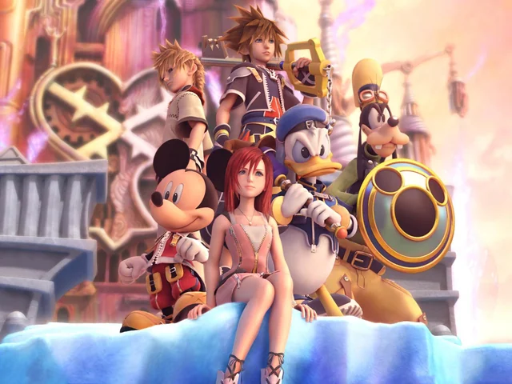
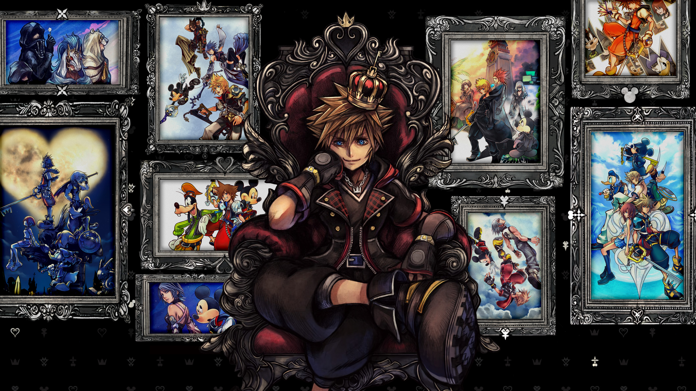
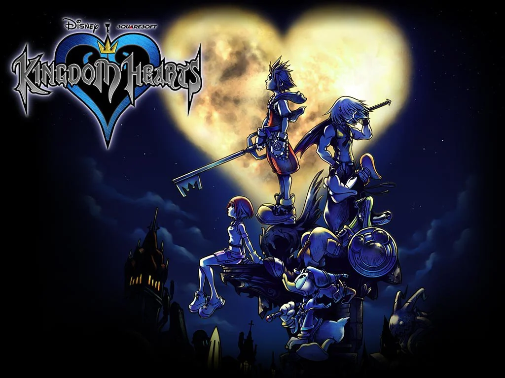
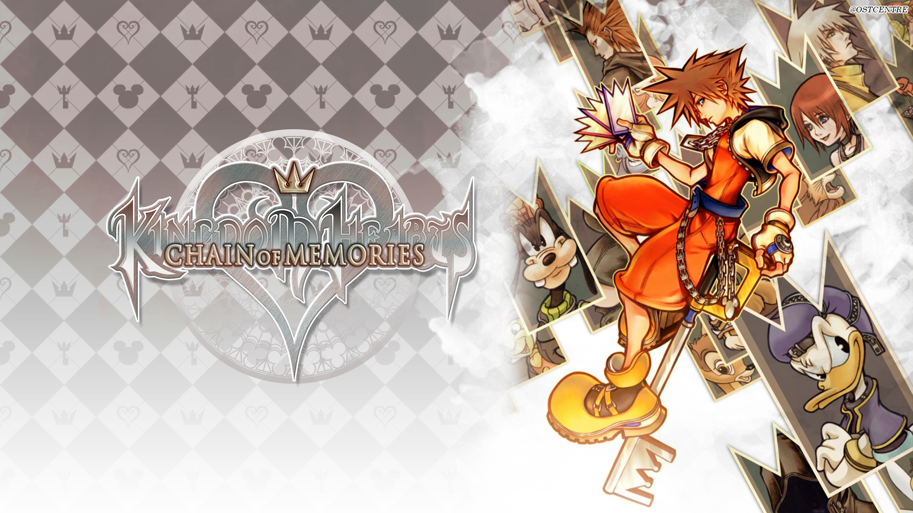
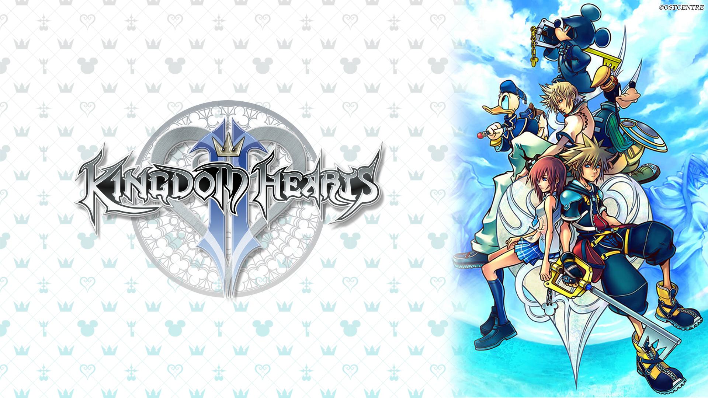
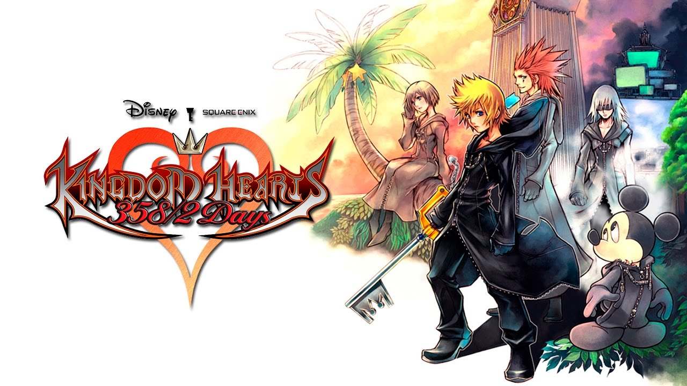
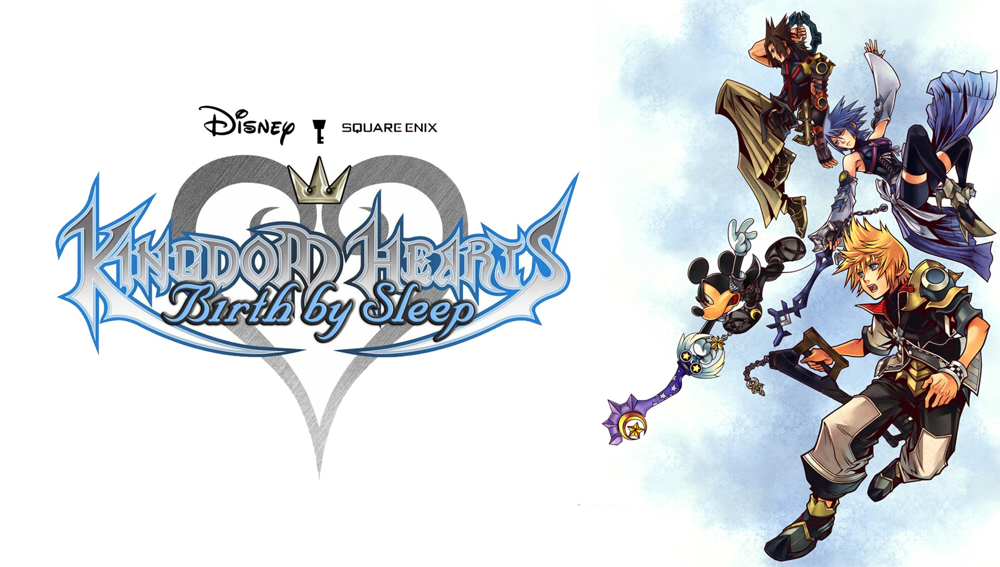
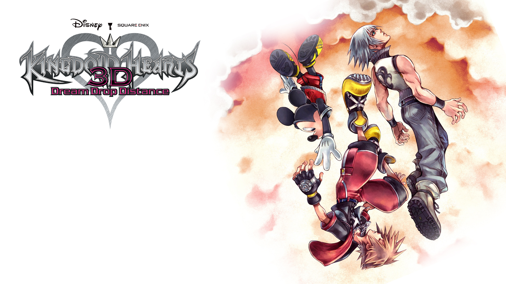
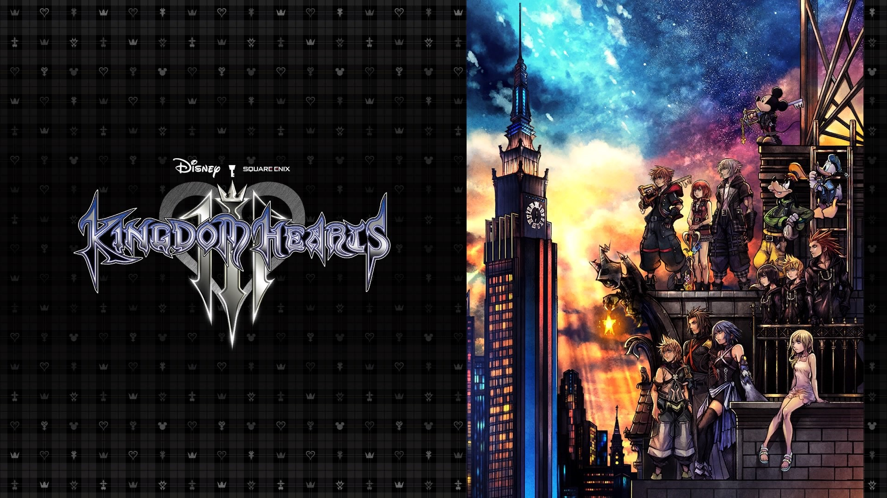

⚠️ Atenção: Verifique o volume do seu dispositivo antes de reproduzir.
Kingdom Hearts
Um guia completo sobre a série de jogos Kingom Hearts

Sobre Kingdom Hearts
Kingdom Hearts é uma série de jogos de RPG desenvolvidos e publicados
pela Square Enix. É resultado da colaboração entre
Square e Disney Interactive Studios e está sob
direção de
Tetsuya Nomura, um antigo designer de personagens da Square. Kingdom Hearts é um crossover de várias criações da Disney dentro de
um único universo criado especificamente para a série. Em adição, a
série conta com um elenco de voz all-star que inclui vozes oficiais dos
personagens da Disney. Personagens da série Final Fantasy (aclamada
franquia da Square Enix) também aparecem e interagem com o jogador e com
os personagens da Disney. A série é centralizada no personagem principal
Sora, sua procura pelos seus amigos e seus
encontros com os personagens da Disney e de Final Fantasy, em seus
respectivos mundos.

A série Kingdom Hearts é um fenômeno no mundo dos jogos, composta por
nove títulos principais desenvolvidos pela Square Enix, além de um jogo
exclusivo para celulares, o Kingdom Hearts V CAST, criado pela
Superscape, e mais tardar o lançamento de uma versão para smartphnones
o- Kingdom Hearts Union χ. Além dos jogos originais, a franquia conta
com remakes que revisitam e aprimoram os títulos clássicos, enquanto
novos projetos continuam a ser anunciados, mantendo os fãs ansiosos pelo
futuro da série. A maioria dos jogos foi recebida com aclamação da
crítica e sucesso comercial, embora cada título tenha alcançado níveis
variados de popularidade.
Em setembro de 2008, a série já havia ultrapassado a marca
impressionante de 12 milhões de cópias vendidas em todo o mundo, com 2
milhões na região PAL, 3 milhões no Japão e 5 milhões na América do
Norte. Além dos jogos, a franquia expandiu seu universo com uma variedade de
produtos licenciados, como action figures, roupas e acessórios, que
ajudaram a consolidar Kingdom Hearts como uma das séries mais queridas e
reconhecíveis da indústria dos games.
A história de Kingdom Hearts começou quando o produtor,
Shinji Hashimoto conheceu um executivo da Disney num elevador. Square e a filial Japonesa da Disney tinham trabalhado no mesmo
escritório em Tóquio. Então, eles decidiram “montar” o jogo Kingdom
Hearts, envolvendo personagens destas duas empresas.
Kingdom Hearts
Kingdom Hearts é o primeiro jogo da série, e foi lançado em 28 de Março
de 2002 no Japão e em 16 de Setembro de 2002 na América do Norte para
Playstation 2. Kingdom Hearts conta a história de
Sora, Riku e Kairi, três amigos que um dia decidem viajar para
conhecer novos mundos, mas um dia antes da viagem, a Destiny Islands é invadida pelos
Heartless, seres sem coração criados pelas trevas. Quando Riku é levado pela escuridão e Kairi desaparece na frente do
herói, Sora vai a procura de seus amigos, encontrando Donald e Pateta a
procura do Rei Mickey em Traverse Town. Assim, eles decidem unir forças
para descobrir o mistério da espada em forma de chave:
A Keyblade!

Kingdom hearts (2002)
O jogo introduziu a maioria dos personagens principais da série e lançou
a estrutura da história envolvendo corações e a
Keyblade, arma do protagonista que serve para selar as Keyholes de
cada mundo. Também estabeleceu a prévia da presença de personagens e mundos
inspirados em filmes da Disney (como de Wonderland inspirado em Alice no
País das Maravilhas, ou Deep Jungle, mundo que só apareceu neste jogo e
foi inspirado em Tarzan) e de personagens da série Final Fantasy. Na
América do Norte, Kingdom Hearts foi lançado com um conteúdo adicional
não presente na versão original japonesa. Mais tarde o jogo foi
re-lançado, em uma versão exclusivamente para o Japão, com o nome de
Kingdom Hearts: Final Mix em 26 de Dezembro de 2002.
Final Mix inclui o conteúdo da versão norte-americana e novos
inimigos, cutscenes e armas. O jogo foi portado mais tarde para uma coletânea HD da série: Kingdom
Hearts HD 1.5 Remix.
"O coração pode ser frágil. Às vezes, é até mesmo enganoso. Mas ainda
assim, o coração nunca deixa de buscar a verdade. Porque dentro de
cada coração existe uma luz que nunca se apaga."
Kingdom Hearts Chain of Memories
Kingdom Hearts: Chain of Memories é o segundo jogo da série e foi
lançado para Game Boy Advance no Japão em 11 de Novembro de 2004 e na
América do Norte em 7 de Dezembro de 2004. Ele foi lançado depois de uma
decisão de Tetsuya Nomura de levar Kingdom Hearts a consoles portáteis,
sendo que seu plano inicial era lançar logo o Kingdom Hearts II. A
história se passa logo após o fim do primeiro jogo, quando Sora, Donald
e Pateta entram em
Castle Oblivion, um castelo onde esta a Organização XIII.Eles começam a perder as memorias do que aconteceu em sua primeira
aventura e precisam descobrir o porque disso estar acontecendo.

Kingdom Hearts Chain of Memories (2004)
Chain of Memories foi um dos menos bem sucedidos da série até agora, por
incluir um sistema de cartas inconvencional a série, mas apesar disso, o
game foi portado para o Playstation 2 como Kingdom Hearts Re:Chain of
Memories e para o Playstation 3 na coletânea HD: Kingdom Hearts HD 1.5
Remix.
"As memórias são maravilhosas. Mesmo que sejam dolorosas, elas nos
ajudam a crescer."
Kingdom Hearts 2
Kingdom Hearts II é o terceiro jogo da série, lançado no Japão em 22 de
Dezembro de 2005 para PlayStation 2. Ele conta, primeiramente, a
história de
Roxas: Um Nobody da Organização XIII que vem tendo sonhos estranhos
com um garoto que não conhece, chamado Sora. E logo após, conta a história de Sora, quando descobre-se que este
estava adormecido com Donald e Pateta a um ano e agora pode empunhar
duas Keyblades (habilidade conseguida de Roxas). Sora, novamente,
precisa ir atrás de seus amigos, já que não se sabe a localização de
Riku, ou do Rei Mickey desde o final de Chain of Memories.

Kingdom Hearts 2 (2005)
O jogo eleva o conceito de coração envolvendo Nobodies e Heartless.
Kingdom Hearts II recebeu um remake intitulado Kingdom Hearts II: Final
Mix, contendo mais material do que o primeiro lançamento, e chefes e cut
scenes adicionais. Kingdom Hearts II Final Mix foi lançado junto com
Kingdom Hearts Re:Chain of Memories. Essa coleção é intitulada Kingdom
Hearts II Final Mix + e foi lançada em 29 de Março de 2007.
"Quem eu sou? Isso realmente importa? O que importa é que eu tenho
amigos que eu posso proteger."
Kingdom Hearts 358/2 Days
Kingdom Hearts 358/2 Days é o quarto título da série, lançado no Japão
em 30 de maio de 2009 para o Nintendo DS, e na América do Norte em 29 de
setembro de 2009. O jogo ocorre ao mesmo tempo de Chain Of Memories, mas
começa perto do final de Kingdom Hearts.
O jogo conta a história de Roxas, um Nobody da Organização XIII que
não consegue se lembrar de nada que lhe aconteceu. No entanto, ele é um Nobody especial, já que é o único capaz de
empunhar uma Keyblade (devido a conexão que possui com Sora, ou até
mesmo, com Ventus). A maior parte dos mundos são os mesmos que os o do
primeiro jogo, e o cenário principal é o "The World That Never Was". Foi
o segundo da série a ser lançado para um portatil!

Kingdom Hearts 358/2 Days (2009)
"Mesmo que você se esqueça de mim, não se esqueça do que sentimos
juntos. Prometa que vai se lembrar."
Kingdom Hearts Birth by Sleep
Kingdom Hearts Birth by Sleep é o quinto jogo da série e foi lançado no
Japão em 9 de Janeiro de 2010 para PlayStation Portable e 7 de Setembro
na América do Norte. Ele conta a história de dez anos antes do primeiro
Kingdom Hearts. Os personagens principais são
Terra, Aqua e Ventus, três Keyblade wielders que saíram em busca de
Master Xehanort e seu aprendiz Vanitas. A primeira aparição destes personagens foi num video secreto do
Kingdom Hearts II nomeado de "The Gathering" e depois houve uma
continuação em Kingdom Hearts II Final Mix + com o nome do video "Birth
by Sleep". O jogo foi lançado como uma tentativa de explicar os eventos
ocorridos antes do primeiro Kingdom Hearts.

Kingdom Hearts Birth by Sleep (2010)
"Eu não tenho medo da escuridão. Ela pode até me consumir, mas nunca
vai mudar quem eu sou."
Kingdom Hearts Re:coded
Kingdom Hearts Re:coded foi lançado no Japão em 7 de outubro de 2010, na
America do Norte em 11 de Janeiro de 2011 e na Europa em 14 de Janeiro
de 2011. Ele é o sexto título da série Kingdom Hearts e conta a história
depois de Kingdom Hearts II. Feito originalmente para celulares no
Japão,
Sora tem que desvendar a historia por tras de um livro que o Grilo
falante achou. O livro estava em branco, com só uma frase escrita, e o Grilo-Falante
não escreveu. Rei Mickey tenta analisar a mensagem, mas não consegue
porque o livro esta corrompido, com isso, Mickey cria o Data-Sora, para
investigar o Livro do Grilo.
Kingdom Hearts Re:coded (2010)
"Não importa o quão difícil seja, sempre há uma luz no fim do caminho.
Basta continuar avançando."
Kingdom Hearts 3D: Dream Drop Distance
Kingdom Hearts 3D: Dream Drop Distance foi lançado exclusivamente para
Nintendo 3DS em 29 de Março de 2012 no Japão, 20 de Julho de 2012 na
Europa, e 31 de Julho de 2012 na America do Norte e é o sétimo título da
série Kingdom Hearts. Anunciado na E3 2010 o jogo é uma continuação
direta de Kingdom Hearts Re:coded, desenvolvido para a nova plataforma
portátil da Nintendo, o Nintendo 3DS.
A história mostra Sora enfrentado testes para poder se tornar um
legítimo mestre da Keyblade, e suas viagens por mundos adormecidos, inspirados em filmes como
Tron: o Legado e Os Tres Mosqueteiros. Além de usar alguns elementos dos
primeiros jogos da série que consagraram ela como RPG de ação, Dream
Drop Distance também utiliza os famosos efeitos 3D sem óculos do
portátil da Nintendo. Foi o primeiro jogo a ser lançado em uma
plataforma de 8ª geração.

Kingdom Hearts 3D: Dream Drop Distance (2012)
"A escuridão não é mais o meu inimigo. Ela é parte de mim, e eu vou
usá-la para proteger o que importa."
Kingdom Hearts III é e o oitavo da série. Foi oficialmente anunciado na
E3 de 2013, e será o primeiro jogo de Kingdom Hearts disponível em
múltiplas plataformas de lançamento em 25 de janeiro de 2019 no Japão e
em 29 de janeiro de 2019 mundialmente, liberado tanto no PlayStation 4
quanto no Xbox One, possui uma DLC, ReMind lançando em 23 de janeiro de
2020 que inicia uma nova saga na série. Kingdom Hearts III se passa após
os eventos mostrados em Kingdom Hearts 3D: Dream Drop Distance, tendo o
protagonista
Sora se juntando com o Pato Donald, Pateta, Rei Mickey e Riku em sua
busca dos sete guardiões da luz e da "Chave para Retornar Corações"
enquanto tentam frustrar os planos do Mestre Xehanort de iniciar uma
guerra devastadora. Sua jornada os faz cruzar caminhos com personagens e visitar mundos
baseados em diferentes propriedades da Disney e da Pixar. O jogo foi
construído usando a Unreal Engine 4.

Kingdom Hearts III (2019)
"O coração pode ser frágil, mas é também a nossa maior força. Ele nos
conecta e nos dá coragem para seguir em frente."
Encerramento
Kingdom Hearts Melody of Memories é o nono jogo da serie lançado em 11
de novembro de 2020 para PlayStation 4, Xbox one e Nintendo Switch sendo
um jogo de música e ritmo.
Kingdom Hearts IV é o décimo jogo da série que foi anunciado em 10 de
abril de 2022, a Square Enix revelou que Kingdom Hearts IV estava em
desenvolvimento, confirmou que Sora, Donald e Pateta retornariam.
Situado em Quadratum, um mundo realista inspirado em Tóquio, Kingdom
Hearts IV dará início ao "Lost Master Arc".
Kingdom Hearts é uma série que combina elementos de RPG de ação com
mecânicas de combate dinâmico e uma narrativa emocionante. A
jogabilidade envolve explorar mundos temáticos baseados em franquias da
Disney e Final Fantasy, resolver quebra-cabeças, evoluir personagens e
enfrentar inimigos em batalhas épicas. A experiência é marcada por uma
história profunda e emocional, que explora temas como amizade, coragem e
a luta entre a luz e a escuridão. A trilha sonora cativante e os visuais
encantadores completam a imersão, tornando Kingdom Hearts uma jornada
inesquecível para os fãs de jogos e de narrativas ricas.
Para jogar a série na ordem cronológica dos eventos, siga esta lista:
Kingdom Hearts Birth by Sleep
Kingdom Hearts
Kingdom Hearts Re:Chain of Memories
Kingdom Hearts 358/2 Days
Kingdom Hearts II
Kingdom Hearts Re:coded
Kingdom Hearts 3D: Dream Drop Distance
Kingdom Hearts III
Kingdom Hearts Melody of Memory
Kingdom Hearts HD 1.5 + 2.5 ReMIX
Kingdom Hearts HD 2.8 Final Chapter Prologue
Kingdom Hearts III + Re Mind (DLC)
Kingdom Hearts Melody of Memory
Atualmente, a Square Enix disponibilizou várias versões remasterizadas e
remakes da série para PC, onde alguns jogos foram trazidos apenas como
animações (filmes).
Essas versões estão disponíveis na Epic Games Store e oferecem gráficos
aprimorados, melhorias de desempenho e todo o conteúdo adicional lançado
ao longo dos anos.